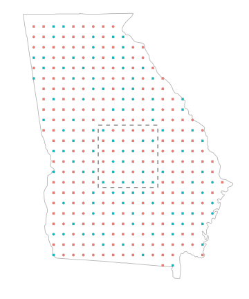
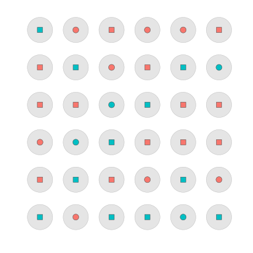
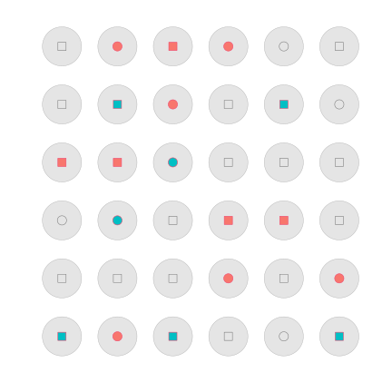
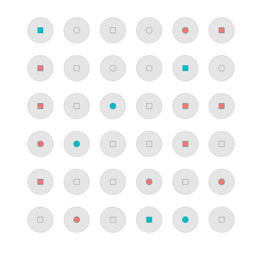
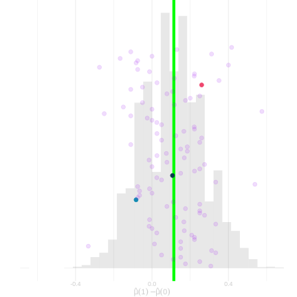
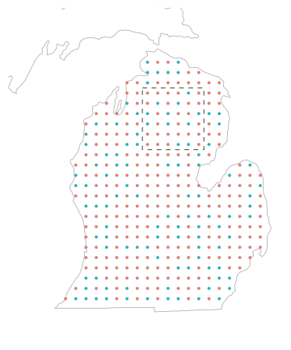
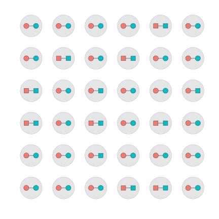
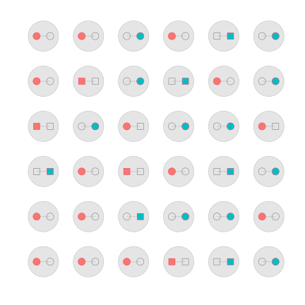
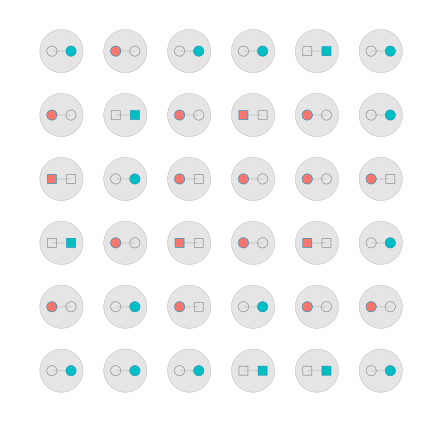
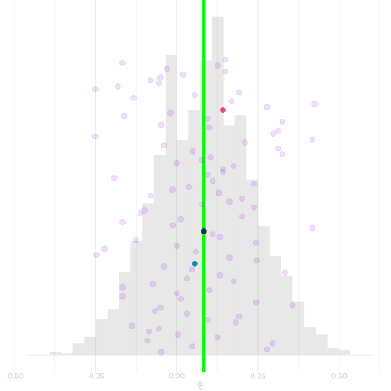

Why Randomization Works
Black vs. non-Black Voters in GA






- Every voter in our population belongs to one group (w_j = 1 or w_j = 0) and has one turnout status.
- ■ voted
- ● didn’t vote
- We draw a random sample of voters from our population.
- The voters we drew are filled in; the ones we didn’t are hollow.
- Each draw gives a different sample — and a different \hat\Delta.
The Potential Outcomes Formalism

| j | y_j(1) | y_j(0) | \tau_j |
|---|---|---|---|
| 1 | 6 | 2 | 4 |
| 2 | 0 | 0 | 0 |
| 3 | 4 | 1 | 3 |
| 4 | 7 | 7 | 0 |
| 5 | 8 | 4 | 4 |
| 6 | 2 | 0 | 2 |
Six participants in the National Supported Work (NSW) job-training experiment, with 1978 earnings in thousands of dollars.
- To reason about cause and effect formally, we use potential outcomes.
- {\color{#F8766D} y_j(0)} is the amount person j would earn if they were not in the job program.
- {\color{#00BFC4} y_j(1)} is the amount person j would earn if they were in the job program.
- Terminology. We call the actions we can take treatments.
- Each individual in our population has a potential outcome for each treatment.
- In this case, we have two treatments and therefore two potential outcomes—a pair—for each individual.
- Each individual’s potential outcomes are drawn as a connected pair of dots, one red and one green.
- How much higher would average earnings be if we treated everyone vs. if we left everyone in control?
- Question. How do we write our target in terms of these potential outcomes?
\text{target} = {\color{#00BFC4} \frac1m \sum_{j=1}^m y_j(1)} - {\color{#F8766D} \frac1m \sum_{j=1}^m y_j(0)} = \frac1m \sum_{j=1}^m \tau_j \quad \text{for} \quad \tau_j = y_j(1) - y_j(0)
- We call the differences \tau_j individual treatment effects.
- \tau_j is the effect of the program on person j in our population.
- We call the average of these individualized effects the average treatment effect.
Recipients of Threatening Letters vs. Others in MI






- Our population is the households in the study, not the whole state.
- We randomize which of them get no mailer or mailer.
- Each household has two potential outcomes, y_j(0) on the left and y_j(1) on the right.
- ■ it votes under that treatment
- ● it doesn’t
- Each household has two potential outcomes, y_j(0) on the left and y_j(1) on the right.
- Randomizing fills in the outcome we see.
- The hollow one is the counterfactual.
- We never observe it.
Potential Outcomes as Functions

| j | y_j(1) | y_j(0) | \tau_j |
|---|---|---|---|
| 1 | 6 | 2 | 4 |
| 2 | 0 | 0 | 0 |
| 3 | 4 | 1 | 3 |
| 4 | 7 | 7 | 0 |
| 5 | 8 | 4 | 4 |
| 6 | 2 | 0 | 2 |
- It’s convenient to think of each individual’s potential outcomes as one function instead of two values.
- y_1(\cdot) is the function defined like this. y_1(w) = \begin{cases} 6 & \text{if } w=1 \\ 2 & \text{if } w=0 \end{cases}
- y_j(\cdot) is the function defined like this. The only way the notation really lets us define it. y_j(w) = \begin{cases} y_j(1) & \text{if } w=1 \\ y_j(0) & \text{if } w=0 \end{cases}
- y_j is a function of w. That’s it. y_j(w) is a constant.
- That individual’s realized outcome is …
- the value y_j(w_j) their potential outcome function returns
- when we plug in the treatment w_j that they actually receive.
Potential Outcomes as Functions

| j | y_j(1) | y_j(0) | \tau_j |
|---|---|---|---|
| 1 | 6 | 2 | 4 |
| 2 | 0 | 0 | 0 |
| 3 | 4 | 1 | 3 |
| 4 | 7 | 7 | 0 |
| 5 | 8 | 4 | 4 |
| 6 | 2 | 0 | 2 |
- Suppose W is a coin flip: a random variable taking on the values 0 and 1 with equal probability.
- Write out a table describing the joint distribution of W and y_3(W).
- Step forward to see the solution.
| \text{probability} | W | y_3(W) |
|---|---|---|
| 1/2 | 0 | 1 |
| 1/2 | 1 | 4 |
The Fundamental Problem of Causal Inference


| j | y_j(1) | y_j(0) | \tau_j | w_j | y_j(w_j) |
|---|---|---|---|---|---|
| 1 | 6 | 2 | 4 | 1 | 6 |
| 2 | 0 | 0 | 0 | 0 | 0 |
| 3 | 4 | 1 | 3 | 1 | 4 |
| 4 | 7 | 7 | 0 | 0 | 7 |
| 5 | 8 | 4 | 4 | 1 | 8 |
| 6 | 2 | 0 | 2 | 0 | 0 |
| j | y_j(1) | y_j(0) | \tau_j | w_j | y_j(w_j) |
|---|---|---|---|---|---|
| 1 | 6 | 2 | 4 | 1 | 6 |
| 2 | 0 | 0 | 0 | 0 | 0 |
| 3 | 4 | 1 | 3 | 1 | 4 |
| 4 | 7 | 7 | 0 | 0 | 7 |
| 5 | 8 | 4 | 4 | 1 | 8 |
| 6 | 2 | 0 | 2 | 0 | 0 |
- In concrete terms.
- You can’t both put someone in the program and not put them in the program.
- So you can see what happens when you treat someone or what happens when you don’t, but not both.
- In abstract terms.
- Each individual can take only one treatment.1
- So only one of each individual’s potential outcomes is realized.
- That means that, even if we can choose everyone’s treatment however we want:
- We can’t calculate anybody’s individual treatment effect \tau_j = y_j(1) - y_j(0).
- And we can’t calculate the average of them, \bar\tau = \frac1m \sum_{j=1}^m \tau_j, either.
Georgia: Black vs. non-Black Voters

- What is the ‘non-Black version’ of a Black person?
- Which specific counterfactual would we even mean?
- ‘Well-defined’ is math for ‘you actually know what you mean when you say it’.
- Eddie Murphy, White Like Me, SNL 1984: same man, makeup and a different voice, everything else held fixed.
- Bertrand and Mullainathan, Are Emily and Greg More Employable Than Lakisha and Jamal? A Field Experiment on Labor Market Discrimination, swap a name on a résumé.
- Kohler-Hausmann, Eddie Murphy and the Dangers of Counterfactual Causal Thinking About Detecting Racial Discrimination, asks what that measured.
Footnotes
This is inconsistent with everyday use of the term treatment because you can, e.g., take both ibuprofen and acetaminophen. In potential outcomes language, we’d say that ibuprofen alone, acetaminophen alone, and ibuprofen plus acetaminophen are three different treatments.
Some people prefer to say ‘randomization distribution’ in this context because we’re not sampling individuals from our population—we get a dot for each one.